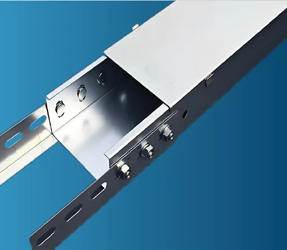

Magnetic field shielding for trunking, transformers and switchgear
Shielding for the strong 50 Hz magnetic fields produced by high-voltage cables, bus-bars, transformers and switchgear, so modern power infrastructure can sit close to people and sensitive equipment.

Power infrastructure creates magnetic fields
High-voltage power cables, transformers and bus-bars all generate electromagnetic fields (EMF). The more current they carry, the more field they emit, and demand for power inside buildings keeps growing.
| Reference level | Typical use as a design target |
|---|---|
| 100 µT | Public exposure, for example protecting people with heart pacemakers |
| 3.75 µT | Limit for EMC-sensitive equipment |
| 0.4 µT | Permanent occupancy and long-term exposure |
Targets depend on the project. The applicable limit depends on who or what is being protected and on local regulation. We confirm the design target with you at the start of the project.
Shielded trunking
Cable and bus-bar routes pass through the same corridors and risers that people and equipment use. Shielded trunking contains the magnetic field right at the source, along the whole length of the route.
It is a practical way to reduce exposure in offices, hospitals, data halls and residential buildings, where moving the cables is not an option.
How the shield works. A shield made of high-purity iron has very high magnetic permeability. The field flows more easily inside the shield than through the surrounding air, which diverts, or shunts, it away from the protected space.
Transformer and switchgear shielding (50 Hz building shielding)
Our modular shielding system uses high-purity iron with very high magnetic permeability, from 50 Hz up to microwave frequencies. Because the field is drawn into the shield rather than into free air, a protected room can be created next to the equipment.
Smaller building footprints and high land prices mean electrical switchgear, MV/LV transformer substations and plant rooms are increasingly sited close to homes and offices. Shielding allows them to be installed there while keeping fields at acceptable levels.
Frequently asked questions
Why do power cables, transformers and bus-bars produce magnetic fields?
Any conductor carrying current creates a magnetic field. The greater the current, the stronger the field. With higher power demand inside modern buildings, these fields are getting larger.
Why not use ordinary steel or aluminium sheet?
Radio-frequency shielding relies on conductivity. Low-frequency magnetic fields at 50 Hz need a material with very high magnetic permeability, which draws the field into the shield instead of letting it pass through the room. That is why a purpose-designed high-permeability shield is used for 50 Hz magnetic field problems.
What field level should I design for?
It depends on who or what you are protecting and on local regulation. Reference levels commonly used are 100 µT for public exposure, 3.75 µT for equipment sensitive to EMC effects, and 0.4 µT for permanent occupancy. We confirm the target for your site at the brief stage.
Can you shield a substation that sits close to housing or offices?
That is one of the main uses of transformer and switch shielding. We assess the equipment, distances and target field level and propose a modular shielding system for the room or building.
Tell us what you need to shield or test
Share your standard, frequency range, footprint and timeline. Our engineers will come back with a clear recommendation and a scoped quotation.